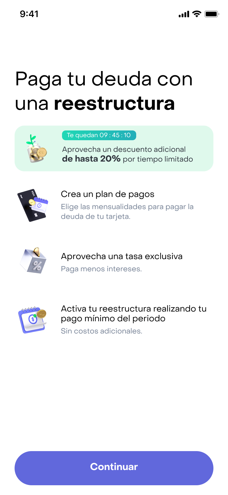
UX Researcher & Service Designer
8+ years turning qualitative and quantitative research into actionable insights that guide product and strategy. Experience across FinTech and EdTech, operating in Mexico and Colombia. +8 años transformando investigación cualitativa y cuantitativa en insights accionables que guían producto y estrategia. Experiencia en FinTech y EdTech, operando en México y Colombia.
The details of my experience, skills, and education.El detalle de mi experiencia, habilidades y formación.
Specialized in turning data and findings into actionable recommendations that support strategic decision-making. I built the Research practice from scratch at a leading EdTech platform in Latin America, and today I lead end-to-end research in FinTech, integrating qualitative and quantitative methods to reduce risk and reach the goal. Especializada en transformar datos y hallazgos en recomendaciones accionables que apoyan la toma de decisiones estratégicas. Construí la práctica de Research desde cero en una plataforma EdTech líder en América Latina, y hoy lidero investigación end-to-end en FinTech, integrando lo cualitativo y lo cuantitativo para reducir riesgos y llegar al objetivo.
End-to-end research projects where research changed the decision — not just the design.Proyectos de investigación end-to-end donde la research cambió la decisión, no solo el diseño.

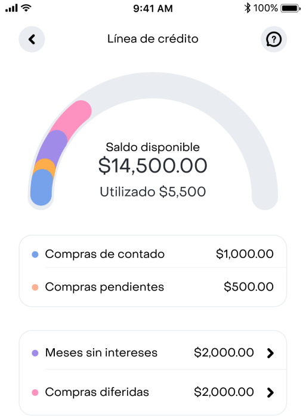
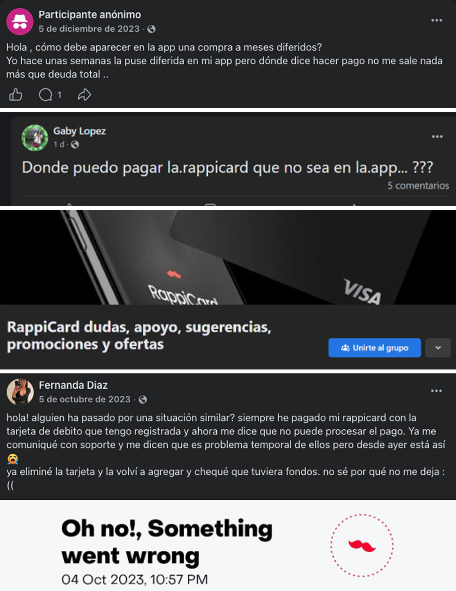
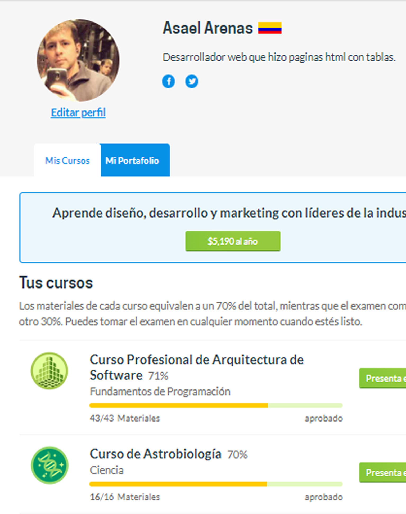
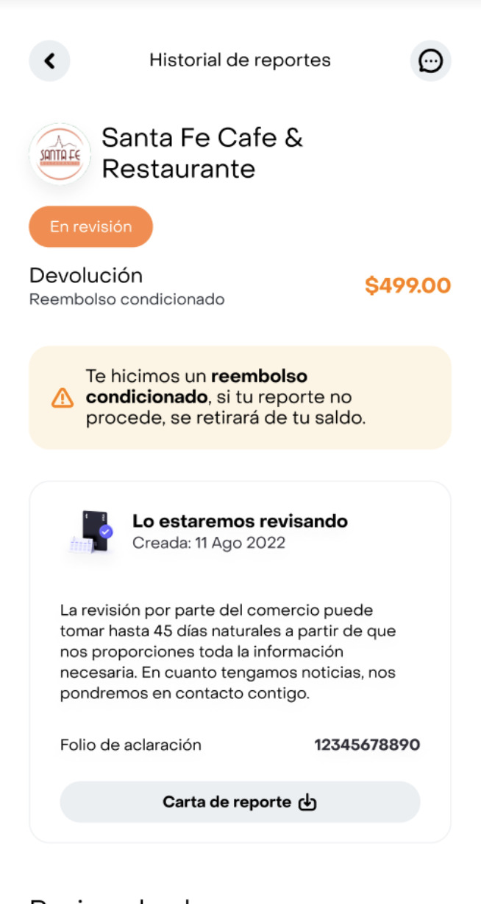
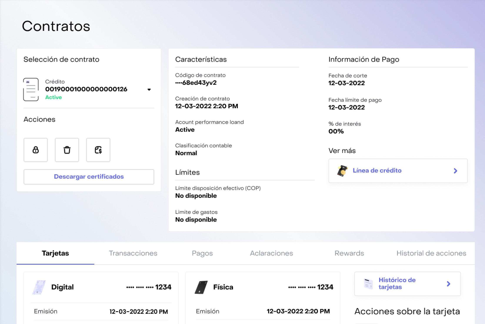
Part of Rappicard's users weren't going to official support (FAQs or their Personal Banker) to resolve doubts. Prior research had shown that experience with banking support is perceived as negative — directly or indirectly — so people turned to other places: unofficial Facebook groups and private Telegram chats, where the answers aren't always correct. The CX tribe's working fix was to build an official community to centralize and validate answers.Una parte de los usuarios de Rappicard no acudía al soporte oficial (FAQs o su Personal Banker) para resolver dudas. Research previo mostraba que la experiencia con el soporte en la banca se percibe como negativa — directa o indirectamente — así que la gente recurría a otros lugares: grupos no oficiales de Facebook y chats privados de Telegram, donde las respuestas no siempre son correctas. La solución de trabajo de la tribu de CX era construir una comunidad oficial para centralizar y validar respuestas.
Before committing engineering and community-management resources, the real question wasn't "what should the community look like?" — it was "is a community even the right answer?" Our job was to test the organization's assumption, not to decorate it.Antes de comprometer recursos de ingeniería y de gestión de comunidad, la verdadera pregunta no era "¿cómo debería ser la comunidad?", sino "¿es siquiera una comunidad la respuesta correcta?". Nuestro trabajo era validar el supuesto de la organización, no decorarlo.
Building a community nobody would rely on — sinking resources into a new surface while the underlying reasons people left (broken trust, weak self-service, and dependence on the Personal Banker) stayed untouched.Construir una comunidad en la que nadie se apoyaría — hundir recursos en una nueva superficie mientras las razones de fondo por las que la gente se iba (la confianza rota, el autoservicio débil y la dependencia del Personal Banker) seguían intactas.
Two phases: desk research across public Facebook groups and private Telegram channels, and qualitative interviews with members screened by tenure and activity — users who had held RappiCard for 6–12 months, made weekly purchases, had contacted their PB or raised a ticket, and belonged to an unofficial group. Four guiding questions ran through it: What did people need to resolve? Did they look inside the app first? Why did they go elsewhere? Did they actually resolve it?Dos fases: desk research en grupos públicos de Facebook y canales privados de Telegram, y entrevistas cualitativas a miembros filtrados por antigüedad y actividad — usuarios con RappiCard de 6 a 12 meses, compra semanal, contacto con su PB o ticket levantado, y parte de un grupo no oficial. Cuatro preguntas guía la atravesaron: ¿Qué necesitaban resolver? ¿Buscaron primero dentro de la app? ¿Por qué fueron a otro lado? ¿Lo resolvieron realmente?
Work-focused early adopters who joined through the waitlist and want "everything in order" to reach bigger goals — a home, traveling — which is why they keep upskilling. They look for organization and control of their finances. RappiCard is no longer their only card; the live benefits are what keep it among their main ones.Early adopters enfocados en el trabajo que entraron por la lista de espera y quieren "tener todo en orden" para cumplir metas más grandes — una casa, viajar — razón por la cual siguen formándose. Buscan organización y control de sus finanzas. RappiCard ya no es su única tarjeta; los beneficios vigentes son lo que la mantiene entre las principales.
People weren't avoiding the app — 80% tried it first and prioritized self-service. They left when they didn't find the answer or the bot didn't understand them, and then turned to a person (their PB) or to the groups. Inside the groups, only ~40% found genuinely useful, experience-based answers; the rest was basic, subjective, or unreliable. And 80% only observed — they read but rarely posted, partly out of fear of exposing a lack of knowledge and partly aware of the misinformation risk. When help is the goal they want the expert; for general curiosity they value a social space and people like them.La gente no evitaba la app — el 80% la intentó primero y priorizó el autoservicio. Se iban cuando no encontraban la respuesta o el bot no los entendía, y entonces recurrían a una persona (su PB) o a los grupos. Dentro de los grupos, solo ~40% halló respuestas realmente útiles, basadas en la experiencia; el resto era básico, subjetivo o poco confiable. Y el 80% solo observaba — leía pero rara vez publicaba, en parte por miedo a exponer desconocimiento y en parte consciente del riesgo de desinformación. Cuando el objetivo es ayuda quieren al experto; para la curiosidad general valoran un espacio social y a personas como ellos.
"I did it there and not in the app because I couldn't find the info in the app anyway.""Lo hacía ahí y no en la app porque igual no encontraba la info en la app."
"I'm not one to ask — I wait for someone else to have asked already.""No soy de los que preguntan; espero a que alguien ya lo haya preguntado."
"If it's app info, I see no point going somewhere else.""Si es info de la app, no le veo sentido a ir a otro lado."
What should the official community look like?¿Cómo debería ser la comunidad oficial?
Is a community even the right fix for the trust problem?¿Es siquiera una comunidad el arreglo correcto al problema de confianza?
The evidence reframed the brief. The pull toward outside groups wasn't love of community — it was a gap in trust and in getting the right kind of help at the right moment. Validated answers are what build trust; what users actually wanted was to understand the product, find the solution immediately, and be understood. A community could live as a secondary space (a repository of resolved doubts + benefits and launches), but it would not fix the upstream problem: onboarding, Help Center content, and over-dependence on the Personal Banker.La evidencia replanteó el brief. La atracción hacia los grupos externos no era amor por la comunidad — era una brecha de confianza y de recibir el tipo de ayuda correcto en el momento correcto. Las respuestas validadas son las que construyen confianza; lo que los usuarios de verdad querían era entender el producto, encontrar la solución de inmediato y sentirse comprendidos. Una comunidad podía existir como espacio secundario (un repositorio de dudas resueltas + beneficios y lanzamientos), pero no resolvería el problema de raíz: onboarding, contenido del Help Center y dependencia excesiva del Personal Banker.
Rather than greenlighting a new community as the answer to trust, the recommendation redirected effort to where the experience was actually failing:En lugar de aprobar una nueva comunidad como respuesta a la confianza, la recomendación redirigió el esfuerzo hacia donde la experiencia realmente fallaba:
No direct metrics were captured at the time. Years later, the home redesign integrated a first-time value experience (FTV) for new users along with broader communication improvements — the same direction this research pointed to.En su momento no se capturaron métricas directas. Años después, el rediseño de la home integró una experiencia de primer valor (FTV) para usuarios nuevos junto con mejoras generales de comunicación — la misma dirección que esta investigación había señalado.
The most valuable outcome wasn't a spec for a community — it was reframing whether to build one, and pointing investment upstream to where trust actually breaks. The work also named its own limits honestly: no post-hoc metrics, real constraints. Naming that mattered more than presenting a tidy success story.El resultado más valioso no fue un spec de comunidad — fue replantear si construirla, y apuntar la inversión a la raíz, donde de verdad se rompe la confianza. El trabajo también nombró sus propios límites con honestidad: sin métricas posteriores, restricciones reales. Nombrarlo importó más que presentar una historia de éxito impecable.
Platzi, one of Latin America's largest EdTech platforms (≈5M users). The Success team owned the student Profile and arrived with a redesign brief: what aesthetic should it have, what's missing in the section.Platzi, una de las plataformas EdTech más grandes de América Latina (≈5M de usuarios). El equipo de Success era dueño del Perfil del estudiante y llegó con un brief de rediseño: qué estética debería tener, qué le falta a la sección.
A "make it look better" request hides a more important question. Instead of starting from aesthetics, I reframed it around meaning and behavior: What does this space represent for students? Do they know it, use it, and why? What expectations and pain points already exist?Un encargo de "que se vea mejor" esconde una pregunta más importante. En vez de partir de la estética, lo replanteé desde el significado y el comportamiento: ¿Qué representa este espacio para los estudiantes? ¿Lo conocen, lo usan, y para qué? ¿Qué expectativas y dolores ya existen?
A "low-engagement" surface (bio, social links, projects, learning path). The data set the stakes:Una superficie de "bajo engagement" (bio, redes, proyectos, ruta de aprendizaje). Los datos pusieron el contexto:
A mixed approach building on prior knowledge (usability tests showed appetite for easier profile ordering; support tickets framed projects as portfolio/networking material). Qualitative: awareness, use, expectations, pain points, co-creation. Quantitative: sizing awareness, use and pain. Sample: general users · complete-profile users · users with a support ticket in the last 3 months.Un enfoque mixto apoyado en conocimiento previo (pruebas de usabilidad mostraban interés en ordenar el perfil más fácil; los tickets de soporte enmarcaban los proyectos como material de portafolio/networking). Cualitativo: awareness, uso, expectativas, dolores, co-creación. Cuantitativo: dimensionar awareness, uso y dolores. Muestra: usuarios generales · con perfil completo · con ticket de soporte en los últimos 3 meses.
The profile is a repository of achievements and knowledge students actively share — closer to a CV than a settings page. Sharing the profile is easier than sharing each certificate, and it signals "I keep training."El perfil es un repositorio de logros y conocimiento que los estudiantes comparten activamente — más cercano a un CV que a una página de ajustes. Compartir el perfil es más fácil que compartir cada certificado, y comunica "sigo formándome".
"Sharing the profile is easier than sharing each certificate.""Compartir el perfil es más fácil que compartir cada certificado."
"It shows that I keep training or specializing.""Demuestra que sigo capacitándome o especializándome."
"Platzi is recognized in the tech world.""Platzi es reconocida en el mundo tech."
It's the most organic path to review projects, but not ideal during editing (built lesson by lesson, +3 extra clicks). Badges generate value, curiosity and belonging for top users and motivate the highest-engagement group — yet there's no way to spark that curiosity in everyone else.Es el camino más orgánico para revisar proyectos, pero no es ideal durante la edición (se construye lección a lección, +3 clics extra). Las insignias generan valor, curiosidad y pertenencia en los top users y motivan al grupo de mayor engagement — pero no hay forma de despertar esa curiosidad en los demás.
Architecture changes are needed more than UI changes.Se necesitan cambios de arquitectura más que de UI.
The profile behaves like a CV, so that value had to be consolidated, not just restyled. Recommendations: separate and organize by learning area (completed, in progress, portfolio by area), and make badges interactive — how was it earned, and what do I need to earn it too.El perfil se comporta como un CV, así que ese valor había que consolidarlo, no solo maquillarlo. Recomendaciones: separar y organizar por áreas de aprendizaje (completado, en curso, portafolio por área), y hacer las insignias interactivas — cómo se obtuvo y qué necesito para obtenerla yo también.
The research also surfaced PlatziConnect, a pilot connecting offers and students that lived disconnected from the Profile — missing vital student info and duplicating user effort. Linking them would create coherent connections and avoid information fragmentation. An open thread for next steps: the recruiter's own context — which elements are most relevant, which are noise, and which add credibility.La investigación también sacó a la luz PlatziConnect, un piloto que conectaba ofertas y estudiantes pero vivía desconectado del Perfil — sin información vital del estudiante y duplicando el esfuerzo del usuario. Vincularlos daría conexiones coherentes y evitaría la fragmentación de información. Un hilo abierto para los siguientes pasos: el contexto del reclutador — qué elementos son más relevantes, cuáles son ruido y cuáles aportan credibilidad.
The deliverable wasn't a prettier screen; it was a shift in the conversation — from UI to information architecture — backed by behavioral data at scale. Reframing a cosmetic brief into a systems problem is the difference between executing a request and changing what gets built.El entregable no fue una pantalla más bonita; fue mover la conversación — de UI a arquitectura de información — respaldada por datos de comportamiento a escala. Replantear un brief cosmético como un problema de sistemas es la diferencia entre ejecutar un pedido y cambiar lo que se construye.
A debt-restructuring flow (Reestructura PV0) offered to RappiCard users flagged as at-risk of default — but not yet delinquent. Mixed-methods research reframed it from a "lifesaver" into a way for financially fragile users to regain control, and pinpointed the one moment where trust and conversion break.Un flujo de reestructura de deuda (Reestructura PV0) ofrecido a usuarios de RappiCard marcados como propensos a caer en mora — pero aún no morosos. La investigación mixta lo replanteó de "salvavidas" a una forma en que usuarios financieramente frágiles recuperan el control, y señaló el único momento donde se rompen la confianza y la conversión.
Rappicard launched Reestructura PV0 in early 2025: a way for cardholders flagged as at-risk of default — but not yet delinquent — to restructure their debt. Eligibility is set by a predictive risk model that flags accounts before they fall into default. Conversion looked encouraging — better than the existing Saldo Diferido productstronger than a comparable existing product — but the team didn't actually know who these users were or what drove them to accept or reject the offer.Rappicard lanzó Reestructura PV0 a inicios de 2025: una forma de que tarjetahabientes marcados como propensos a caer en mora — pero aún no morosos — reestructuren su deuda. La elegibilidad la define un modelo de riesgo predictivo que identifica cuentas antes de que caigan en mora. La conversión lucía alentadora — mejor que la del producto Saldo Diferidomejor que la de un producto comparable — pero el equipo no sabía realmente quiénes eran estos usuarios ni qué los llevaba a aceptar o rechazar la oferta.
I came in to test two organizational assumptions, not to confirm them: (1) that users treat the product as a "lifesaver" to refinance all their debt, and (2) that people aren't certain what they're signing up for — specifically around card blocks and credit-bureau records.Entré a validar dos supuestos de la organización, no a confirmarlos: (1) que los usuarios usan el producto como un "salvavidas" para refinanciar toda su deuda, y (2) que las personas no tienen certeza de qué están contratando — en especial sobre bloqueos de tarjeta y registros en buró de crédito.
This product targets financially fragile people at a stressful moment. If the flow is unclear — or framed for the wrong mental model — users can feel deceived, distrust the brand, or commit without understanding the consequences (like a credit-bureau impact). The stakes were conversion and trust at the same time.Este producto se dirige a personas financieramente frágiles en un momento de estrés. Si el flujo no es claro — o se enmarca para el modelo mental equivocado — los usuarios pueden sentirse engañados, desconfiar de la marca o comprometerse sin entender las consecuencias (como el impacto en buró de crédito). Lo que estaba en juego era, a la vez, la conversión y la confianza.
A mixed-methods approach to capture both depth and scale, plus a Maze evaluation of the flow. Interviews ran with users who had accepted and users who had rejected the offer; the survey (8% margin of error) sized the patterns seen in the conversations.Un enfoque mixto para capturar profundidad y escala, más una evaluación del flujo en Maze. Las entrevistas incluyeron a usuarios que aceptaron y a usuarios que rechazaron la oferta; la encuesta (8% de margen de error) dimensionó los patrones vistos en las conversaciones.
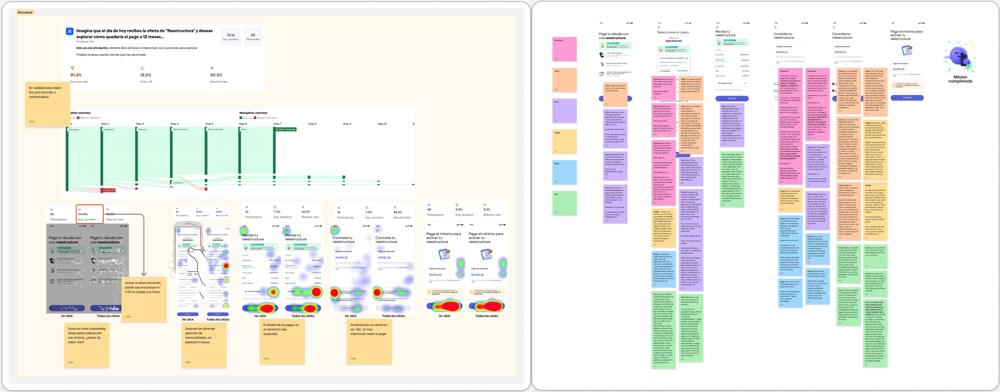
These aren't careless spenders. They're planners who use credit cards to smooth income dips and buy time. The reframe that mattered: their willingness to pay doesn't fail — their context doesn't forgive. A low-income week, a big unavoidable expense, or an emergency (a divorce, a death) breaks the system that otherwise works for them.No son gastadores descuidados. Son planificadores que usan la tarjeta para suavizar los altibajos y ganar tiempo. El replanteamiento que importó: su voluntad de pago no falla — su contexto no perdona. Una semana de bajos ingresos, un gasto fuerte inevitable o un imprevisto (un divorcio, un fallecimiento) rompe el sistema que normalmente les funciona.
The product's value is emotional as much as financial: immediate relief, a sense of organization and control, even a way to "force themselves not to spend." Users who took it weren't just complying with a payment — they were trying to regain control of their money and protect something they valued (their card, their record). Restructuring works best when it speaks to personal control, not just financial duty.El valor del producto es tan emocional como financiero: alivio inmediato, sensación de organización y control, incluso una forma de "obligarse a no gastar". Quienes lo tomaron no solo cumplían con un pago — buscaban recuperar el control de su dinero y proteger algo que valoran (su tarjeta, su historial). La reestructura funciona mejor cuando apela al control personal, no solo al deber financiero.
"It gave me peace to know I wouldn't fall into default.""Me dio paz saber que no iba a caer en mora."
"I needed to bring my monthly payment down.""Necesitaba bajar mi mensualidad."
"I trusted it because it was inside the app.""Confié porque estaba dentro de la app."
The journey was smooth until Terms & the activation payment, where the emotional curve dipped into confusion and surprise. The amount felt high and unexpected, and its ambiguity (the first installment? an advance? an extra charge?) bred distrust — and for several, a liquidity wall. The card block was also unanticipated (13% of survey respondents were uncomfortable with it), though most interviewees ultimately read it as a guardrail against their debt spiraling.El recorrido fue fluido hasta Términos y el pago de activación, donde la curva emocional cayó en confusión y sorpresa. El monto se sintió alto e inesperado, y su ambigüedad (¿el primer plazo? ¿un adelanto? ¿un cobro extra?) generó desconfianza — y para varios, un muro de liquidez. El bloqueo de tarjeta tampoco se anticipaba (al 13% de encuestados le incomodó), aunque la mayoría de entrevistados terminó leyéndolo como un freno para que su deuda no se descontrolara.
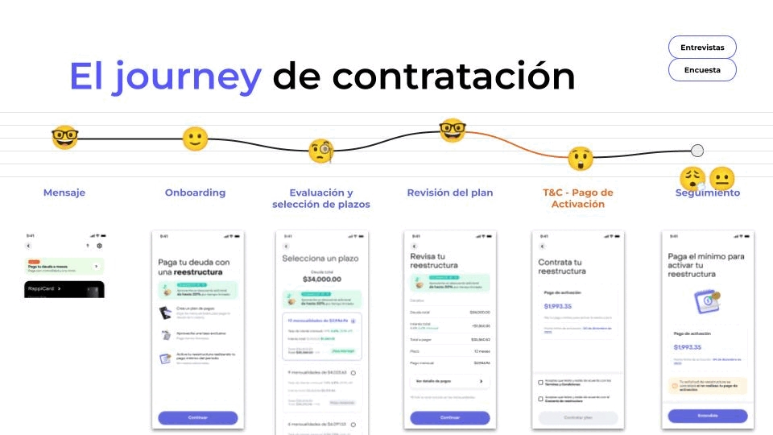
The information is clear enough — 83% said so.La información es suficientemente clara — el 83% lo dijo.
Yet the activation payment is where trust, and conversion, break.Y aun así, el pago de activación es donde se rompen la confianza y la conversión.
Taken at face value, the flow worked. But digging into the one moment that loses users told a different story — so the recommendation wasn't a new screen, it was redesigning the activation moment across four layers.A primera vista, el flujo funcionaba. Pero indagar en el único momento que pierde usuarios contó otra historia — así que la recomendación no fue una pantalla nueva, sino rediseñar el momento de activación en cuatro capas.
The study delivered a friction-and-clarity map of the flow, decision profiles (how different users face the offer), and a layered set of recommendations handed to product and design. Satisfaction and reuse intent were high — but the work also flagged a quieter risk: few people understood the credit-bureau implications of restructuring, a gap worth closing for trust and ethical reasons, not just UX ones.El estudio entregó un mapa de fricción y claridad del flujo, perfiles de decisión (cómo distintos usuarios enfrentan la oferta) y un set de recomendaciones por capa entregado a producto y diseño. La satisfacción y la intención de re-uso fueron altas — pero el trabajo también señaló un riesgo silencioso: pocas personas entendían las implicaciones en buró de crédito de reestructurar, una brecha que vale la pena cerrar por confianza y ética, no solo por UX.
Two senior moves anchored this study. First, refusing to rubber-stamp the "lifesaver" hypothesis: the evidence reframed it into something more precise — for these users it's less a lifesaver and more a way to reorder their finances and regain calm. Second, not stopping at the comforting 83% "it's clear" number, and instead naming the one moment that actually costs trust and conversion. The most useful output wasn't validation — it was a sharper definition of who these users are and where the experience has to earn their trust.Dos decisiones senior anclaron este estudio. Primero, negarme a aprobar sin más la hipótesis del "salvavidas": la evidencia la replanteó en algo más preciso — para estos usuarios es menos un salvavidas y más una forma de reordenar sus finanzas y recuperar la calma. Segundo, no quedarme en el cómodo 83% de "es claro", sino nombrar el único momento que de verdad cuesta confianza y conversión. El resultado más útil no fue validar — fue definir con mayor nitidez quiénes son estos usuarios y dónde la experiencia tiene que ganarse su confianza.
When a cardholder reports an unrecognized transaction, the company can temporarily credit the amount back while the dispute with the merchant is resolved. The term "Reembolso Condicionado" had already been validated in Mexico, but Colombia ran the same mechanism under a different name — "Abono temporal" — communicated only by email and only for merchant disputes. The open question: does that terminology actually land in Colombia, and how do users want to be kept informed while their case is open?Cuando un tarjetahabiente reporta una transacción no reconocida, la empresa puede abonar temporalmente el monto mientras se resuelve la disputa con el comercio. El término "Reembolso Condicionado" ya se había validado en México, pero Colombia corría el mismo mecanismo con otro nombre — "Abono temporal" — comunicado solo por correo y solo para disputas con el comercio. La pregunta abierta: ¿esa terminología de verdad aterriza en Colombia, y cómo quieren los usuarios mantenerse informados mientras su caso está abierto?
Two organizational assumptions, not to confirm but to test: (1) that the business terminology matches how users actually understand the process, and (2) that email — the existing Colombian standard — is the right channel for a fraud moment. The job wasn't to pick the prettiest label; it was to find out where the experience actually breaks.Dos supuestos de la organización, no para confirmar sino para validar: (1) que la terminología del negocio coincide con cómo los usuarios realmente entienden el proceso, y (2) que el correo — el estándar vigente en Colombia — es el canal correcto para un momento de fraude. El trabajo no era elegir la etiqueta más bonita; era encontrar dónde se rompe de verdad la experiencia.
This sits at a fraud moment — high anxiety, low patience. A name that doesn't land, or the wrong channel, erodes trust precisely when the user feels most vulnerable. And a process named one way in Mexico and another in Colombia adds friction across markets and to the support lines that handle both.Esto ocurre en un momento de fraude — alta ansiedad, poca paciencia. Un nombre que no aterriza, o el canal equivocado, erosiona la confianza justo cuando el usuario se siente más vulnerable. Y un proceso que se llama de una forma en México y de otra en Colombia suma fricción entre mercados y a las líneas de soporte que atienden ambos.
A quantitative survey contrasting two profiles, both with 6+ months of tenure and a transaction clarification in the last 6 months: Profile 1 — no experience with the provisional refund (their prior clarification was ruled against them); Profile 2 — direct experience (ruled in their favor). The instrument combined a free naming exercise, a forced choice among candidate terms, familiarity and comprehension checks, channel preference, and a desirability rating.Una encuesta cuantitativa que contrastó dos perfiles, ambos con 6+ meses de antigüedad y una aclaración de transacción en los últimos 6 meses: Perfil 1 — sin experiencia con el abono provisional (su aclaración previa resultó en contra); Perfil 2 — con experiencia directa (resultó a favor). El instrumento combinó un ejercicio de naming libre, una elección forzada entre términos candidatos, medición de familiaridad y comprensión, preferencia de canal y una calificación de deseabilidad.
Low familiarity, high comprehension. Most people had never heard the formal term, yet ~86% correctly inferred it meant "a refund under certain conditions" — so the learning curve is short and no single label dominated. In the free naming exercise, "Devolución" surfaced organically as the favored root (~25%); in the forced choice, Profile 1 leaned to "Devolución temporal" (30.9%) and Profile 2 to "Reembolso condicionado" (28.6%), with the options clustered close together. For staying informed during a case, users overwhelmingly preferred WhatsApp over the old email-only standard. And the process itself was wanted: desirability scored 5★ (Profile 1) and 4.4★ (Profile 2) — people see it as something that simply "should exist."Baja familiaridad, alta comprensión. La mayoría nunca había oído el término formal, pero ~86% dedujo correctamente que significaba "una devolución bajo ciertas condiciones" — así que la curva de aprendizaje es corta y ningún término dominó. En el naming libre, "Devolución" surgió de forma orgánica como la raíz favorita (~25%); en la elección forzada, el Perfil 1 se inclinó a "Devolución temporal" (30.9%) y el Perfil 2 a "Reembolso condicionado" (28.6%), con las opciones muy parejas. Para mantenerse informados durante un caso, los usuarios prefirieron WhatsApp por mucho sobre el estándar de solo correo. Y el proceso en sí se desea: la deseabilidad calificó 5★ (Perfil 1) y 4.4★ (Perfil 2) — lo ven como algo que simplemente "debe existir".
Which exact label tests best?¿Qué etiqueta exacta funciona mejor?
The label barely matters — the channel and the moment do.La etiqueta casi no importa — lo que importa es el canal y el momento.
The naming data was close across options and even the unfamiliar term was understood instantly — so over-optimizing the word was the wrong place to spend energy. The real leverage was twofold: align the terminology so the same process reads the same in Mexico and Colombia, and move the fraud-moment communication off email-only and onto the channels users actually check (WhatsApp / in-app), so nobody is left in anxious silence while their case is open.Los datos de naming estaban parejos entre opciones y hasta el término desconocido se entendía al instante — así que sobre-optimizar la palabra era el lugar equivocado para gastar energía. La palanca real era doble: alinear la terminología para que el mismo proceso se lea igual en México y Colombia, y sacar la comunicación del momento de fraude del solo-correo hacia los canales que los usuarios sí revisan (WhatsApp / in-app), para que nadie quede en silencio ansioso mientras su caso está abierto.
Beyond the naming decision, the study pointed to a larger play: unifying the regional dispute flow (one terminology, user-preferred channels) as a way to reduce transactional anxiety after a fraud event — with a plausible downstream effect on support load and post-fraud retention. This is framed as a hypothesis, not a result: it would need success and satisfaction metrics measured after rollout (vs. the email baseline) to be validated. Naming what wasn't yet measured was part of the recommendation.Más allá de la decisión de naming, el estudio apuntó a una jugada mayor: unificar el flujo regional de disputas (una terminología, canales preferidos por el usuario) como vía para reducir la ansiedad transaccional tras un evento de fraude — con un efecto plausible en la carga de soporte y la retención post-fraude. Se plantea como hipótesis, no como resultado: requeriría medir métricas de éxito y satisfacción tras el lanzamiento (vs. el baseline de correo) para validarse. Nombrar lo que aún no se medía fue parte de la recomendación.
The senior move was refusing to over-rotate on "the perfect name." The data said the word was nearly interchangeable and easily understood, so the leverage lived elsewhere — regional consistency and the right channel at the most fragile moment. Being explicit about what the study did not measure (operational load, churn) is what kept the strategic framing honest instead of inflated.La decisión senior fue negarme a sobre-girar sobre "el nombre perfecto". Los datos decían que la palabra era casi intercambiable y fácil de entender, así que la palanca vivía en otro lado — la consistencia regional y el canal correcto en el momento más frágil. Ser explícita sobre lo que el estudio no midió (carga operativa, churn) es lo que mantuvo el encuadre estratégico honesto en vez de inflado.
Rappicard's internal support console — used by Personal Bankers and Advisors in Mexico and Colombia — was moving from a read-only view to a transactional, asynchronous one. The new "Action Flows" let agents execute ticket-driven actions on a cardholder's account: freeze card, replace card, download certificates (CO), restart shipping (MX). Prior research had already flagged agent resistance to change, so the new flows had to be both understood and trusted before launch.La consola interna de soporte de Rappicard — usada por Personal Bankers y Advisors en México y Colombia — pasaba de una vista de solo lectura a una transaccional y asíncrona. Los nuevos "Action Flows" permitían a los agentes ejecutar acciones por ticket sobre la cuenta del tarjetahabiente: congelar tarjeta, reemplazar tarjeta, descargar certificados (CO), reiniciar envío (MX). Research previo ya había detectado resistencia al cambio, así que los flujos nuevos debían entenderse y dar confianza antes de lanzarse.
Three organizational assumptions, to test rather than confirm: (1) each action has all the information an agent needs to execute it; (2) the explanations make clear what happens after acting; and (3) the post-action message — pointing agents to where the result appears, since the system is asynchronous — makes the follow-up obvious. Plus one open question: what happens when an action is done by mistake, and how do agents resolve it?Tres supuestos de la organización, a validar y no a confirmar: (1) cada acción tiene toda la información que el agente necesita para ejecutarla; (2) las explicaciones dejan claro qué pasa después de accionar; y (3) el mensaje posterior — que indica dónde aparece el resultado, dado que el sistema es asíncrono — hace evidente el seguimiento. Y una incógnita: ¿qué pasa cuando una acción se hace por error, y cómo lo resuelven?
These agents act on real customers' cards at volume, in an asynchronous system where the result isn't immediate. If the validation moment is unclear, an agent can repeat the action, assume the system failed, or — worst — act on the wrong card (digital vs. physical). In a high-volume internal tool, ambiguity turns directly into operational error and slower customer resolution.Estos agentes accionan sobre tarjetas de clientes reales y en volumen, en un sistema asíncrono donde el resultado no es inmediato. Si el momento de validación no es claro, un agente puede repetir la acción, asumir que el sistema falló o — lo peor — accionar sobre la tarjeta equivocada (digital vs. física). En una herramienta interna de alto volumen, la ambigüedad se vuelve directamente error operativo y atención más lenta al cliente.
A mixed approach: moderated 1:1 interviews (60 min) with agents who had finished onboarding and had 3–5 months of tenure, walking each flow in a clickable prototype; plus unmoderated Maze tests — icon card sorts, first-click and success on prototype missions, confirmation visibility, and desirability ratings. Four guiding lenses: do they understand the icon? do they see the result? where do they go to validate? what breaks?Un enfoque mixto: entrevistas 1:1 moderadas (60 min) con agentes ya onboardeados y con 3 a 5 meses de antigüedad, recorriendo cada flujo en un prototipo clickeable; más pruebas no moderadas en Maze — card sorts de íconos, primer clic y éxito en misiones de prototipo, visibilidad de la confirmación y calificación de deseabilidad. Cuatro lentes guía: ¿entienden el ícono? ¿ven el resultado? ¿dónde validan? ¿qué se rompe?
High-volume support agents who handle many cases at once and prize speed and visual cues to stay in control. They see themselves as "the Expert" the customer relies on — so traceability (what happened, who did it, what state it's in) matters to them as much as the action itself.Agentes de soporte de alto volumen que manejan muchos casos a la vez y valoran la velocidad y las señales visuales para mantener el control. Se perciben como "el Experto" en quien el cliente se apoya — así que la trazabilidad (qué pasó, quién lo hizo, en qué estado está) les importa tanto como la acción misma.
Comprehension was never the problem: icons were correctly mapped (88% freeze / 83% replace in card sorts) and agents rated the functions high. The problem was visibility of the result. The asynchronous confirmation toast was effectively invisible — 0% saw it on freeze, ~50% on replace (CO 40% / MX 50%) — because agents don't watch for a message: they watch the card's State change color, and fall back to the action history. On top of that, 33% in MX couldn't tell "creation date" from "update date," and the raw integration code in the history confused agents in both markets.La comprensión nunca fue el problema: los íconos se mapearon bien (88% congelar / 83% reemplazar en card sorts) y los agentes calificaron alto las funciones. El problema era la visibilidad del resultado. El toast de confirmación asíncrono era prácticamente invisible — 0% lo vio al congelar, ~50% al reemplazar (CO 40% / MX 50%) — porque los agentes no buscan un mensaje: buscan que el State de la tarjeta cambie de color, y como respaldo van al historial de acciones. Además, el 33% en MX no distinguía "fecha de creación" de "fecha de actualización", y el código de integración en el historial confundió a agentes en ambos mercados.
"I look for the card to change color — if it doesn't, I don't know it went through.""Me fijo en que la tarjeta cambie de color; si no, no sé si quedó."
"If I don't see the change, I just do it again.""Si no veo el cambio, lo vuelvo a intentar."
"That code in the middle — I don't know what it's for.""Ese código de en medio no sé para qué es."
Quotes are illustrative, reconstructed from session findings.Citas ilustrativas, reconstruidas a partir de los hallazgos de las sesiones.
Are the flows clear enough? — 4.35★ says yes.¿Los flujos son suficientemente claros? — el 4.35★ dice que sí.
Comprehension is high — but the result is invisible, and that's where operational error lives.La comprensión es alta — pero el resultado es invisible, y ahí vive el error operativo.
Restyling icons would have been the obvious answer — but the icons worked. The leverage was the validation and traceability layer: make the result of an action impossible to miss, and make the history readable. So the recommendation reframed the brief from "is the interface clear?" to "does the agent know, with certainty, that the action happened — and can they prove it later?"Remaquillar íconos habría sido la respuesta obvia — pero los íconos funcionaban. La palanca era la capa de validación y trazabilidad: hacer que el resultado de una acción sea imposible de no ver, y que el historial sea legible. Así que la recomendación replanteó el brief de "¿la interfaz es clara?" a "¿el agente sabe, con certeza, que la acción ocurrió — y puede comprobarlo después?".
Measured: the study delivered a comprehension-and-visibility map across the four flows, decision profiles for how agents validate, and a layered set of recommendations handed to product and design. Ratings were high and the flows were navigable — the contribution was pinpointing the one gap the score hid: the invisible confirmation. Projected (flagged as hypothesis): a more visible validation moment and a second confirmation should reduce repeated actions and wrong-card errors — but confirming that needs post-rollout operational metrics (error rate, handle time, recontacts), which this study did not measure.Medido: el estudio entregó un mapa de comprensión y visibilidad de los cuatro flujos, perfiles de decisión de cómo validan los agentes, y un set de recomendaciones por capa entregado a producto y diseño. Las calificaciones fueron altas y los flujos navegables — el aporte fue señalar la única brecha que el número escondía: la confirmación invisible. Proyectado (planteado como hipótesis): un momento de validación más visible y un segundo punto de confirmación deberían reducir las acciones repetidas y los errores de tarjeta equivocada — pero confirmarlo requiere métricas operativas tras el lanzamiento (tasa de error, tiempo de gestión, recontactos), que este estudio no midió.
The senior move was refusing to stop at the comforting 4.35★ and "the icons are understood." The real risk was never comprehension — it was that the result of a transactional action was invisible in an asynchronous system, which in a high-volume support context quietly becomes operational error. Naming what the study did not measure — the downstream operational impact — is what kept the framing honest instead of inflated.La decisión senior fue negarme a quedar en el cómodo 4.35★ y "los íconos se entienden". El riesgo real nunca fue la comprensión — fue que el resultado de una acción transaccional era invisible en un sistema asíncrono, lo que en un contexto de soporte de alto volumen se vuelve, en silencio, error operativo. Nombrar lo que el estudio no midió — el impacto operativo posterior — es lo que mantuvo el encuadre honesto en vez de inflado.
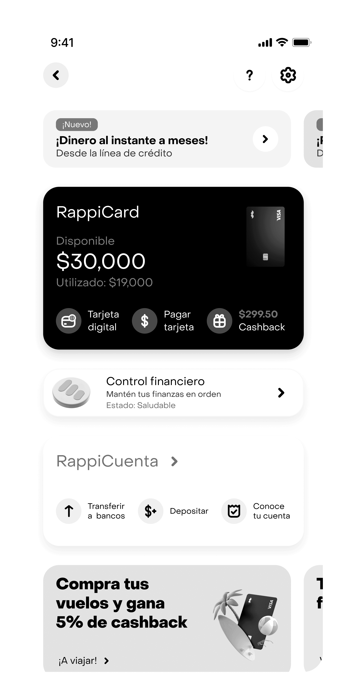
RappiCard's financing tools lived scattered across the app. A three-phase study — exploration, prototype evaluation, and post-launch validation with real early adopters — reframed a "centralize it" brief into the real problem: a global module colliding with a monthly mental model. Post-launch research later confirmed the call.Las herramientas de financiamiento de RappiCard vivían dispersas en la app. Un estudio en tres fases — exploración, evaluación de prototipo y validación post-lanzamiento con early adopters reales — replanteó un brief de "centralizar" hacia el problema real: un módulo global que chocaba con un modelo mental mensual. El research post-lanzamiento lo confirmó después.
RappiCard's financing tools — installments with/without interest (MSI/MCI), deferred balance, cash advance, deferred purchases — lived scattered across the app, with different entry points or none at all. Internally the goal was to drive recurrence, ease access, and give users control. A cross-functional workshop with people from every team (which I facilitated) aligned on building a centralized "manager", and three research phases followed: an exploration to test the idea, an evaluation of the refined prototype, and — after launch — a validation with real users.Las herramientas de financiamiento de RappiCard — compras a meses con y sin intereses (MSI/MCI), saldo diferido, disposición, compras diferidas — vivían dispersas en la app, con puntos de entrada distintos o inexistentes. Internamente se buscaba aumentar la recurrencia, facilitar el acceso y dar control. Un workshop transversal con personas de todos los equipos (que facilité) alineó la idea de construir un "administrador" centralizado, y siguieron tres fases de investigación: una exploración para validar la idea, una evaluación del prototipo refinado y — tras el lanzamiento — una validación con usuarios reales.
Three organizational assumptions, to test rather than confirm: (1) that centralizing the tools is the right fix and users want one consolidated view; (2) that users will discover the proposed entry points; and (3) that they'll read the module as the total of their card spend — its intended global framing.Tres supuestos de la organización, a validar y no a confirmar: (1) que centralizar las herramientas es el arreglo correcto y los usuarios quieren un consolidado; (2) que los usuarios descubrirán los entry points propuestos; y (3) que leerán el módulo como el total de su gasto con la tarjeta — su enfoque global pretendido.
This sits on top of debt and financially tense moments. A module nobody discovers wastes the build; worse, framing total/global debt to people who think in monthly terms breeds confusion and anxiety; and an aggressive countdown timer on credit offers can tip from "opportunity" into pressure — an ethical edge when you're nudging someone toward more financing.Esto se monta sobre la deuda y momentos financieramente tensos. Un módulo que nadie descubre desperdicia el desarrollo; peor aún, enmarcar la deuda total/global ante personas que piensan en términos mensuales genera confusión y ansiedad; y un contador de urgencia en las ofertas de crédito puede pasar de "oportunidad" a presión — una arista ética cuando empujas a alguien hacia más financiamiento.
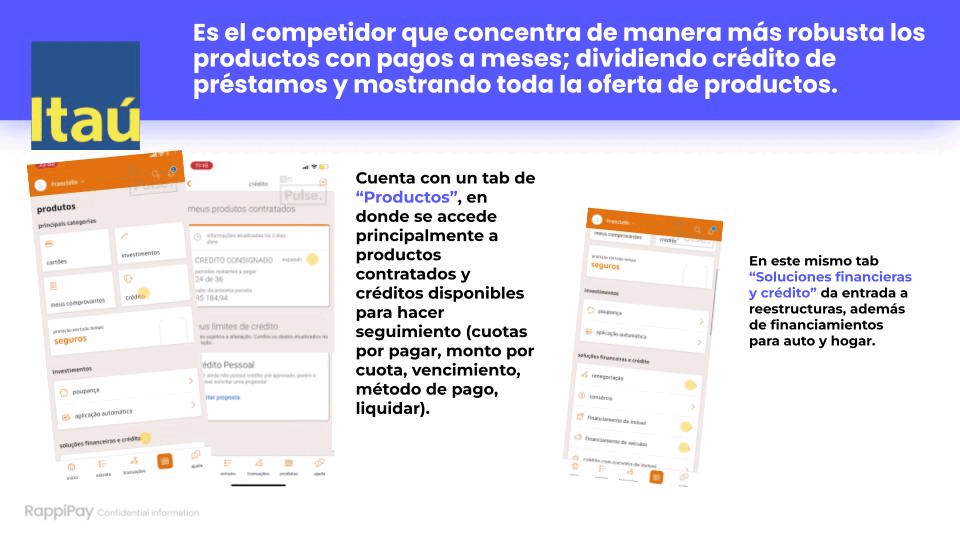
Competitive benchmark (11 banks & fintechs), a cross-functional workshop I facilitated, 8 in-depth interviews and 717 Maze responses — to test whether centralizing even made sense.Benchmark competitivo (11 bancos y fintechs), un workshop transversal que facilité, 8 entrevistas a profundidad y 717 respuestas en Maze — para validar si centralizar siquiera tenía sentido.
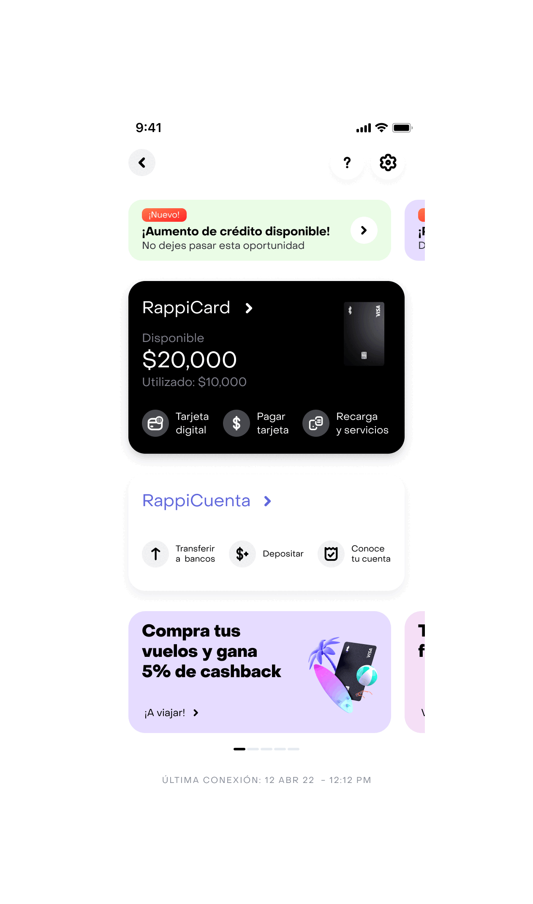
6 in-depth interviews and 311 unmoderated Maze responses on a clickable prototype — first-click and success on the entry points, comprehension, and desirability.6 entrevistas a profundidad y 311 respuestas no moderadas en Maze sobre un prototipo clickeable — primer clic y éxito en los entry points, comprensión y deseabilidad.
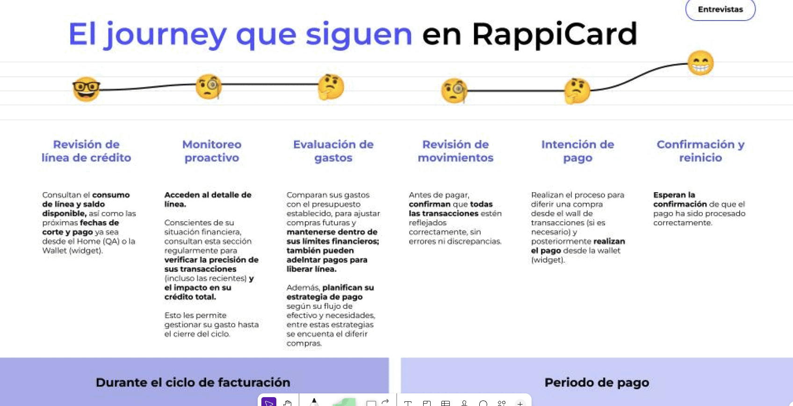
After launch, 6 in-depth interviews and 99 survey responses with real early adopters of the live feature — split into low- and high-frequency users.Tras el lanzamiento, 6 entrevistas a profundidad y 99 respuestas de encuesta con early adopters reales de la función en vivo — divididos en usuarios de baja y alta frecuencia.
Users on installments (MSI/MCI), deferred balance, and "totaleros" who pay in full. The app isn't their main bookkeeping tool — that lives in a notebook, Excel, or memory — but it's essential at two moments: paying the card and checking for unrecognized charges. The thread that mattered: they organize their money by the month, around the statement cut-off and the amount due.Usuarios con compras a meses (MSI/MCI), saldo diferido, y "totaleros" que pagan todo. La app no es su herramienta principal para llevar cuentas — eso vive en una libreta, Excel o la memoria — pero es esencial en dos momentos: pagar la tarjeta y verificar cargos no reconocidos. El hilo que importó: organizan su dinero por mes, alrededor de la fecha de corte y el monto a pagar.
The concept itself landed — the color-coded line by tool was read as a quick, practical summary. But the module was built global (total spend across the credit line) while users think monthly: 39% read consumption as a global total and 32% as the current period, so a global module collided with a monthly mental model and produced confusion — even mild anxiety — about "what I've spent" vs. "what I owe at the cut-off." On top of that, discovery was low (only 32% found an entry point, in ~31 seconds), and the deferred-balance vs. deferred-purchases naming confusion persisted from the exploration phase.El concepto en sí aterrizó — la línea por herramienta con código de color se leyó como un resumen rápido y práctico. Pero el módulo se construyó global (gasto total sobre la línea de crédito) mientras los usuarios piensan mensual: 39% leyó el consumo como un total global y 32% como el periodo actual, así que un módulo global chocó con un modelo mental mensual y generó confusión — incluso ansiedad leve — entre "lo que he gastado" y "lo que debo al corte". Además, el descubrimiento fue bajo (solo 32% halló un entry point, en ~31 segundos), y la confusión de naming entre saldo diferido y compras diferidas persistió desde la fase de exploración.
"Sometimes I confuse what I've spent with what I have to pay at the cut-off.""A veces confundo lo que he gastado con lo que tengo que pagar al corte."
"It's like when you take out cash and split it into the months you chose to pay.""Es como cuando retiras efectivo y lo divides en los meses que pusiste a pagar."
"The timer feels like an ad pushing me.""El contador lo siento como un anuncio empujándome."
Real quotes, anonymized for confidentiality.Citas reales, anonimizadas por confidencialidad.
How should the manager look and be organized?¿Cómo debería verse y organizarse el administrador?
Does the module speak the user's mental language — monthly — and separate debt from offers?¿El módulo habla el idioma mental del usuario — mensual — y separa la deuda de la oferta?
Taken at face value, the concept tested well (65% liked it). But the leverage was never the visuals — it was reconciling a global module with a monthly mental model, closing a discovery gap only 32% cleared, untangling the naming, and softening an urgency timer that nudged more debt.A primera vista, el concepto funcionaba (65% lo aprobó). Pero la palanca nunca fueron los visuales — era reconciliar un módulo global con un modelo mental mensual, cerrar una brecha de descubrimiento que solo 32% superó, desenredar el naming, y suavizar un contador de urgencia que empujaba más deuda.
Measured: across the first two phases the study delivered a discovery-and-comprehension map (the 32% discovery gap, the global-vs-monthly clash, the persistent deferred-balance/deferred-purchases confusion), validated concept acceptance (65.3%), and a layered set of recommendations handed to product and design.Medido: en las dos primeras fases el estudio entregó un mapa de descubrimiento y comprensión (la brecha de 32% en descubrimiento, el choque global vs. mensual, la confusión persistente saldo/compras diferidas), validó la aceptación del concepto (65.3%) y un set de recomendaciones por capa entregado a producto y diseño.
The module shipped in August 2024, reaching 100,000 usersa six-figure user base. Rather than treating hand-off as the finish line, I ran a post-launch study with real early adopters — and it did two things at once.El módulo se lanzó en agosto de 2024, alcanzando 100,000 usuariosuna base de seis cifras. En vez de tratar el hand-off como la meta, corrí un estudio post-lanzamiento con early adopters reales — e hizo dos cosas a la vez.
"It's almost the same information as the previous screen.""Es casi la misma información de la pantalla anterior."
"I'd rather see the key info on my card's main screen, and the defer options in a menu.""Prefiero ver la información clave en la pantalla principal de mi tarjeta, y las opciones de diferir en el menú."
Real quotes from the post-launch study.Citas reales del estudio post-lanzamiento.
Honest limit: this is the early-adopter cohort — people already using the feature — so PMF and satisfaction run high by construction. And it measures perception and fit, not business impact: conversion, adoption funnel, and support-load reduction would still need their own post-rollout metrics.Límite honesto: es la cohorte de early adopters — gente que ya usa la función — así que el PMF y la satisfacción salen altos por construcción. Y mide percepción y fit, no impacto de negocio: conversión, funnel de adopción y reducción de carga de soporte seguirían necesitando sus propias métricas post-lanzamiento.
Several senior moves anchored this study. First, refusing to rubber-stamp "centralizing = the win": the evidence reframed the problem toward the mental model. Second, naming the global-vs-monthly clash that quietly created anxiety in a product about debt. Third, flagging the ethical edge of an urgency timer that pushes more financing. And the post-launch phase closed a loop most case studies never do: the pre-launch hypotheses weren't left as promises — real early adopters confirmed the mental-model clash and the naming friction, while the feature reached PMF. Throughout, I stayed explicit that the business impact (conversion, support load) was not measured. Predicting a problem is good; coming back to verify the prediction held is what makes the call trustworthy.Varias decisiones senior anclaron este estudio. Primero, negarme a aprobar sin más "centralizar = la victoria": la evidencia replanteó el problema hacia el modelo mental. Segundo, nombrar el choque global vs. mensual que en silencio generaba ansiedad en un producto sobre deuda. Tercero, señalar la arista ética de un contador de urgencia que empuja más financiamiento. Y la fase post-lanzamiento cerró un ciclo que la mayoría de los casos nunca cierra: las hipótesis pre-lanzamiento no quedaron como promesas — early adopters reales confirmaron el choque de modelo mental y la fricción de naming, mientras la función alcanzaba PMF. En todo momento fui explícita en que el impacto de negocio (conversión, carga de soporte) no se midió. Predecir un problema está bien; volver a verificar que la predicción se cumplió es lo que hace confiable el diagnóstico.
Words from colleagues and leaders I've worked with, via LinkedIn.Palabras de colegas y líderes con quienes he trabajado, vía LinkedIn.
I had the chance to work with Lilian on the same UX Research team, where we collaborated continuously across several projects. Lilian is a deeply proactive, empathetic person who uses curiosity as a compass for new skills that turn her projects into a continuous discovery of possibilities. She knows how to identify timely, effective methodologies to tackle product problems at different stages of development.Tuve oportunidad de trabajar con Lilian en el mismo equipo de UX Research donde colaboramos continuamente con diversos proyectos; Lilian es una persona sumamente propositiva, empática y que usa la curiosidad como brújula de nuevas habilidades que harán que sus proyectos sean un continuo descubrimiento de posibilidades. Sabe identificar metodologías oportunas y eficaces para abordar problemáticas de productos que pueden estar en diferentes etapas de desarrollo.
Working with Lil has always meant hitting goals. I had the chance to work hand in hand on projects tied to very ambitious OKRs; designing based on the insights Lil uncovered always meant reducing risk but, above all, making sure we reached the goal on products like installments & loans. It's worth highlighting the soft skills: how could anyone interview so many people without them? Lil is a great example of this.Trabajar con Lil siempre ha sido lograr objetivos. Tuve la oportunidad de trabajar mano a mano en proyectos que le pegaban a OKRs muy ambiciosos; diseñar en base a los insights que Lil encontraba siempre era reducir riesgos pero sobre todo asegurarnos de llegar al objetivo en productos como installments & loans. Siempre es bueno destacar las habilidades blandas: ¿cómo podría alguien entrevistar a tantas personas si no las tiene? Lil es un gran ejemplo de esto.
Lilian is one of the most detail-oriented researchers I've had in my career. Not only that, she has the empathy and depth to ask the team the right questions, bring order to the chaos, and guide us toward insights that truly carry the level of impact we need — especially amid uncertainty. On top of that, she's an exceptional human being.Lilian es una de las researchers con mayor atención al detalle que he tenido en mi carrera. No solo eso, sino que tiene el nivel de empatía y profundidad para hacer las preguntas correctas al equipo, ordenar el caos y así guiarnos a insights que realmente tengan el nivel de impacto que necesitamos, sobre todo en incertidumbre. Aparte, su calidad humana es excepcional.
I had the opportunity to mentor Lilián during her onboarding at Platzi, where she stood out for her strong initiative, quick learning, and remarkable ability to proactively identify user experience issues across the platform. As a UX designer with a focus on CX, she distinguished herself through excellent teamwork, organization, and adaptability—seamlessly integrating company processes with her personal approach. Her organizational methods allowed her to deliver more complete and detailed results. Lilián has outstanding empathy and active listening skills, which enrich her findings.Tuve la oportunidad de mentorear a Lilián durante su onboarding en Platzi, donde destacó por su gran iniciativa, rápido aprendizaje y notable capacidad para identificar proactivamente problemas de experiencia de usuario en toda la plataforma. Como diseñadora UX con enfoque en CX, se distinguió por su excelente trabajo en equipo, organización y adaptabilidad, integrando sin fricciones los procesos de la empresa con su enfoque personal. Sus métodos de organización le permitieron entregar resultados más completos y detallados. Lilián tiene una empatía y una escucha activa sobresalientes, que enriquecen sus hallazgos.
I had the opportunity to supervise Lilián Zamora for 5 months at Platzi. During that time, Lilián showed excellent teamwork skills, conducting user interviews focused on User Research, quick learning, and commitment to the company and the team. In addition, she is an excellent person who cares and contributes to the culture of the organization. I definitely recommend her for any initiative or project.Tuve la oportunidad de supervisar a Lilián Zamora durante 5 meses en Platzi. En ese tiempo, Lilián demostró excelentes habilidades de trabajo en equipo, conduciendo entrevistas de usuario enfocadas en User Research, rápido aprendizaje y compromiso con la empresa y el equipo. Además, es una excelente persona que se preocupa y contribuye a la cultura de la organización. Sin duda la recomiendo para cualquier iniciativa o proyecto.
Had the opportunity to work with Lilian back in 2022 at Platzi performing research and subsequent analysis of results oriented to services, support, experience and usability investigation. She's a creative and resolute person with the capacity for teamwork, empathy, and knows how to communicate properly with users to better understand their needs in order to guarantee a higher success rate for the product/service. I'm sure she will give the best of herself in any future challenge.Tuve la oportunidad de trabajar con Lilian en 2022 en Platzi, realizando investigación y el posterior análisis de resultados orientados a servicios, soporte, experiencia e investigación de usabilidad. Es una persona creativa y resolutiva, con capacidad para el trabajo en equipo, empatía, y sabe comunicarse adecuadamente con los usuarios para comprender mejor sus necesidades y así garantizar una mayor tasa de éxito del producto/servicio. Estoy seguro de que dará lo mejor de sí en cualquier reto futuro.
Lilian is a great team player, always oriented to people and the users' experience. The qualities of Lilian that stand out are empathy, companionship, and openness to feedback, not to mention her elegant way of expressing herself.Lilian es una gran compañera de equipo, siempre orientada a las personas y a la experiencia de los usuarios. Las cualidades de Lilian que destacan son la empatía, el compañerismo y la apertura al feedback, sin mencionar su elegante forma de expresarse.
Essays on research, systems, and the place of research within organizations.Ensayos sobre research, sistemas y el lugar de la investigación dentro de las organizaciones.
Have a research or service design challenge? I'd love to hear about it.¿Tienes un reto de investigación o diseño de servicios? Me encantaría escucharlo.
lianzave@gmail.com